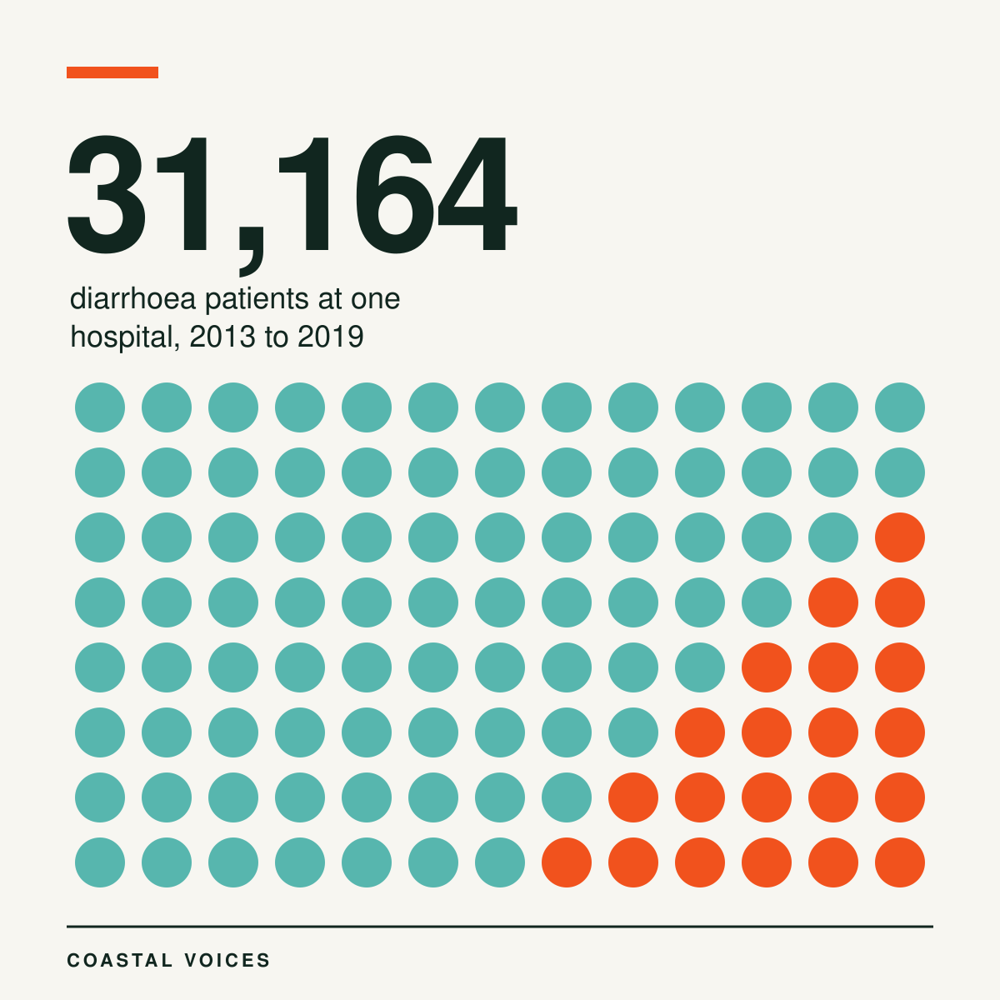
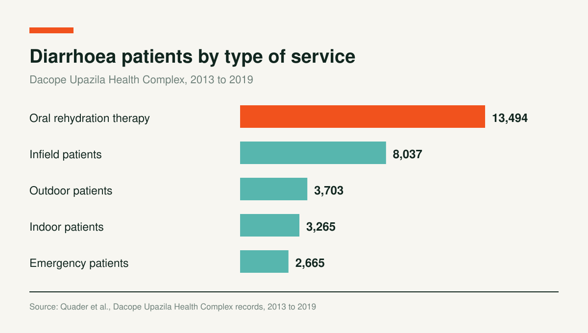
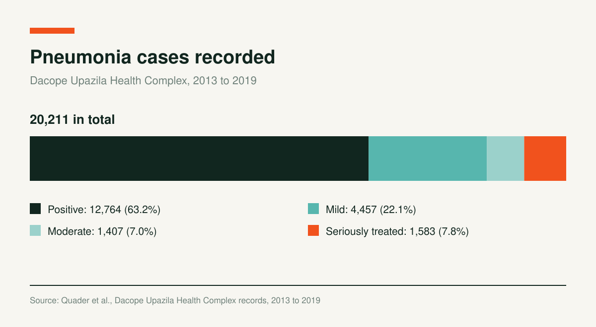

Dacope's Only Hospital Treated 31,164 Diarrhoea Patients in Seven Years

Dacope sits in the southwest of Bangladesh, in Khulna District, with the Sundarbans to its south. A total of 158,309 people live in its 106 villages. They share one hospital, the Dacope Upazila Health Complex, which has 50 beds.
Between 2013 and 2019, that hospital recorded 31,164 patients with diarrhoea. It treated 843 people for arsenic poisoning and admitted 20,211 patients with pneumonia. Researchers Mohammad Abdul Quader, Md. Farhad Hasan, Md. Habibur Rahman and Md. Abdul Malak went through those records to ask whether salt in the water makes coastal communities sick.

A District Cut from a Forest, Short of Fresh Water
Dacope was once part of the Sundarbans. Settlements and farmland replaced parts of the forest, and paddy and shrimp are now the main sources of income across 27,228 hectares of farmland.
Over the last two decades, salinity has become a serious concern. Cyclones Sidr in 2007 and Aila in 2009 damaged safe drinking water sources across Khulna District. River water enters shrimp ponds, and through seepage the salt reaches nearby freshwater ponds and shallow aquifers. Natural arsenic in the groundwater adds to the shortage of safe water.
What the Hospital Counted
Diarrhoea led the records. Of the 31,164 patients, 13,494 came for oral rehydration therapy, the largest group. Another 8,037 were infield patients, 3,703 outdoor patients, 3,265 indoor patients and 2,665 emergency cases.

The arsenic count was smaller but steady. Over the seven years, 843 patients had arsenicosis: 434 women and 409 men. The hospital recorded symptoms such as inflamed skin, new warts or lesions, stomach discomfort, muscle cramps and tingling in the fingers and toes.
Pneumonia admissions reached 20,211. The hospital sorted them as 12,764 positive cases, 4,457 mild, 1,407 moderate and 1,583 seriously treated. The authors note that tuberculosis is a common cause of pneumonia in the area, and that inhaling saltwater can injure the lungs.

Where the Evidence Stops
The authors tested whether patient numbers moved with environmental measures. For arsenicosis, diarrhoea and tuberculosis, the statistical relationships did not reach significance, at levels of 0.670, 0.316 and 0.102. The study used hospital records and interviews with hospital staff, not water tests in individual homes.
The authors still call the high level of salt in drinking and cooking water a major public health concern. They write that many waterborne infections along the shore are linked to salinity, and that salt in food and water is tied to hypertension related conditions.
The 50 bed hospital is where most people go. When it cannot cope, patients turn to a kabiraj, a traditional herbalist, or to informal village physicians. The authors call for affordable ways to supply safe, low salt drinking water across the coast, and for special treatment of the health effects of too much salt.